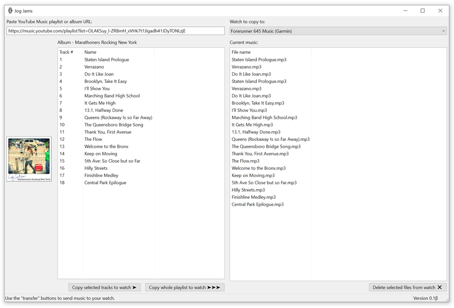

Jog Jams is a simple way to get albums and playlists on to your running watch.
It currently only supports YouTube Music and Garmin watches, and currently only runs on Windows.
Drop me a line if you would like support for another music service, another watch type, or another host platform.